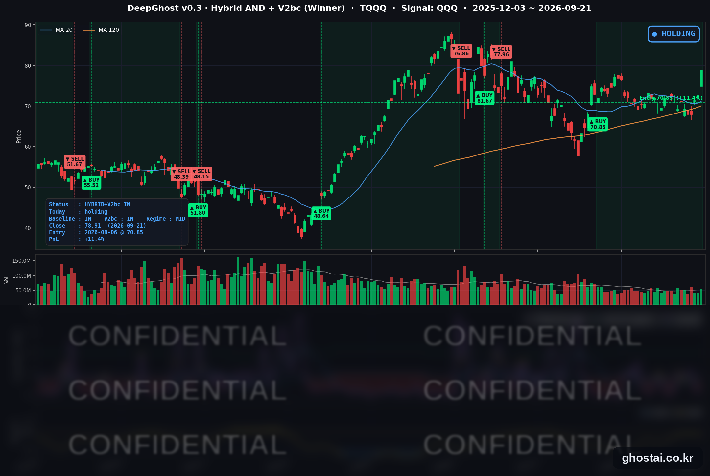

메타 11% 급등, 나스닥 사상 최고
· Ghost.AI 데일리 리포트
👻 매일 시그널과 히스토리를 홈페이지에서 한눈에 → www.ghostai.co.kr
회원 페이지 안내 — 회원 가입하시면 커버리지 전 종목의 원본 시그널과 분석 레포트를 매일 확인하실 수 있습니다. 회원 페이지는 블로그·유튜브보다 먼저 업데이트됩니다. 선착순 100명을 모집하고 있으며, 이메일과 필명만으로 가입하실 수 있고 서비스 사용료는 받지 않습니다. 가입 신청 후 운영자 승인을 거쳐 이용하실 수 있습니다.
나스닥 종합지수가 +2.26% 올라 사상 최고 종가를 새로 썼습니다. 그런데 오른 종목은 절반 남짓이었고, 상승은 AI·반도체에 몰렸습니다. 같은 날 저희 모델은 메타를 규칙대로 매도했는데, 메타는 그날 11% 넘게 올랐습니다.
📊 오늘의 매매 신호
| 항목 | 내용 |
|---|---|
| 오늘 할 일 | ✅ 아무것도 안 해도 됩니다 |
| 포지션 상태 | 📈 TQQQ 보유 중 (IN POSITION) |
| 매수 진입일 | 2026-08-06 (32거래일째) |
| 진입가 → 현재가 | $70.85 → $78.91 |
| 현재 포지션 수익 | +11.38% |
TQQQ 시그널 — IN POSITION
현재 상태: 매수 포지션 유지 중 | 이번 포지션 수익 +11.38%

나스닥100(QQQ)이 +2.78% 오르면서 TQQQ는 +8.63% 상승한 78.91달러로 마감했습니다. 전략의 평가손익은 전 거래일 +2.53%에서 +11.38%가 됐습니다. 8월 6일 70.85달러에 진입한 뒤 오늘이 32거래일째이고, 이번 구간에서 가장 높은 자리입니다. 직전 최고는 8월 13일의 +8.89%였습니다.
오늘의 이야기 — 규칙대로 매도한 날, 메타가 11% 올랐습니다
저희 모델은 메타를 9월 21일 시가 680.38달러에 매도했습니다. 9월 9일 648.64달러에 매수해 8거래일 보유했고, 실현 수익률은 +4.89%입니다. 모델이 전 거래일에 매도 신호를 냈고, 규칙대로 다음 거래일 시작 가격에 체결됐습니다.
문제는 그날 메타가 +11.34% 급등해 741.24달러로 마감했다는 점입니다. 웰스파고가 목표주가를 640달러에서 796달러로 올렸고, AI 에이전트 Muse가 미국 앱스토어 1위에 오른 것이 재료였습니다.
그래서 매도 규칙을 다시 확인해 봤습니다.
첫째, 이런 날은 드뭅니다. 2010년 이후 매도로 끝난 거래를 전부 다시 계산해 보면, 체결한 날 하루에 이만큼 오른 경우는 16년을 통틀어 손에 꼽을 정도입니다.
둘째, 시가 체결이라서 손해를 보는 구조는 아닙니다. 체결 시점을 시작 가격 대신 마감 가격으로 바꿔 같은 16년치를 다시 돌려 봤습니다. 결과는 사실상 같았습니다 — 시작 가격에 팔아서 유리했던 날과 불리했던 날이 거의 반반이었고, 평균 차이는 의미를 두기 어려운 수준이었습니다.
셋째, 이번에도 시가 체결이 손해만 본 것은 아닙니다. 메타는 전 거래일 종가 665.75달러보다 2.20% 높은 680.38달러에 개장했습니다. 그날 상승분 중 개장 전에 붙은 몫은 체결가에 그대로 반영됐습니다.
정리하면 이렇습니다. 규칙대로 팔았고, 그날이 유난히 크게 오른 날이었습니다. 신호가 난 다음 거래일 시작 가격에 사고파는 규칙은 사람의 판단이 끼어들 여지를 없애려고 만든 것이고, 그 대가로 이런 날이 가끔 나옵니다. 반대로 크게 내린 날 시작 가격에 먼저 매도해 손실을 줄이는 날도 비슷한 빈도로 있습니다.
오늘 미국 시장 — 시황 요약
지수 마감
| 지수 | 종가 | 등락률 |
|---|---|---|
| S&P 500 | 7,764.70 | +1.49% |
| 나스닥 종합 | 27,122.09 | +2.26% |
| 다우존스 | 52,048.83 | +0.71% |
| 러셀 2000 | 2,875.36 | +0.52% |
| QQQ (나스닥100) | 741.47 | +2.78% |
| TQQQ | 78.91 | +8.63% |
나스닥 종합지수 27,122.09는 1979년 이후 전 이력 기준 최고 종가입니다. 다만 오늘 사상 최고치에 있는 지수는 나스닥 하나뿐입니다. 다우는 자기 최고치보다 4.23% 낮고, 러셀 2000은 6.29% 낮은 자리에 그대로 있습니다.
움직임이 나온 시간대도 갈렸습니다. 나스닥 계열은 개장 전 갭보다 정규장에서 더 올렸습니다(QQQ 갭 +0.90%, 정규장 +1.86%). 반면 소형주(IWM)는 갭 +0.76%로 출발한 뒤 정규장에서 -0.24% 밀렸습니다.
국채 금리 동향
| 만기 | 수익률 | 전 거래일 대비 |
|---|---|---|
| 3개월 | 3.982% | +0.4bp |
| 5년 | 4.834% | -2.2bp |
| 10년 | 4.963% | -3.5bp |
| 30년 | 5.296% | -3.5bp |
금리가 내렸는데, 어느 구간이 내렸는지가 중요합니다. 정책금리에 묶인 3개월물은 제자리(+0.4bp)였고 5년·10년·30년만 함께 내렸습니다. 경기가 나빠질 것이라는 신호였다면 단기부터 움직였을 텐데 그렇지 않았습니다.
내린 이유는 유가입니다. 유가가 내리면 앞으로의 물가 전망이 내려가고, 물가 전망이 내려가면 장기 금리에 반영된 인플레이션 몫이 줄어듭니다. 만기가 긴 현금흐름을 갖는 성장주가 이 혜택을 가장 크게 받아 나스닥이 앞섰습니다.
10년물과 3개월물의 차이는 102.0bp에서 98.1bp로 좁아져 하루 만에 다시 100bp 아래로 내려갔습니다. 다만 4.963%라는 자리 자체는 올해 기준으로 여전히 최상단 구간입니다 — 2026년 180거래일 중 이보다 높게 끝난 날이 5일뿐입니다.
연준 발언 & 금리 패스
오늘은 오스탄 굴스비 시카고 연은 총재가 말했습니다. 인플레이션이 공급 문제가 아니라 수요 과열에서 오는 것이라면 금리 대응은 "더 공격적이고 더 앞당겨진" 형태여야 한다고 했고, 물가를 잡으려면 실업률 상승이라는 대가를 치러야 할 수 있다고 덧붙였습니다.
매파적인 발언입니다. 그런데 지난 수요일 케빈 워시 의장이 "목표 달성을 위해 노동시장에 피해를 줘야 한다고 보지 않는다"고 한 것과 정면으로 갈립니다. 9월 16일 인상 이후 연준 안에서 추가 인상의 강도와 속도를 두고 의견이 나뉘고 있다는 뜻입니다.
시장은 굴스비 발언을 가격에 반영하지 않았습니다. 발언 당일 10년물이 오히려 내렸고 나스닥은 사상 최고치로 마감했습니다. 유가 하락과 미중 협의 진전이라는 두 재료의 영향이 발언보다 컸습니다.
오늘의 핵심 이슈
-
나스닥이 사상 최고치로 마감했는데 오른 종목은 절반 남짓이었습니다. S&P 500 구성종목 497개 중 오른 종목은 56.9%에 그쳤고, 중간값 종목의 등락률은 +0.27%였습니다. 지수(+1.49%)와 중간값 종목의 격차가 올해 기준으로 매우 큰 편에 속합니다. 지수 하나로는 강세장이지만 안을 보면 대형 기술주만의 강세장입니다.
-
유가가 내려간 것이 오늘의 동인이었고, 정유·에너지 종목은 반대로 내렸습니다. 유엔총회를 계기로 미국-이란 외교 재개 기대가 커지면서 원유 ETF USO가 -3.68%로 4거래일 연속 내렸습니다. 유가 하락은 물가 전망과 장기 금리를 끌어내려 성장주에 유리하게 작용했지만, 매출과 정제 마진이 유가에 직결되는 업종에는 그대로 손실이었습니다 — MPC -5.30%, VLO -4.84%, XOM -3.20%입니다.
-
미중 협의 진전이 반도체를 끌어올렸습니다. 베선트 재무장관이 허리펑 중국 부총리와의 주말 협의가 "매우 성공적"이었다고 밝혔고, 9월 24일 트럼프-시진핑 정상회담이 예정되어 있습니다. 공급망이 국경을 넘어 얽혀 있는 반도체 업종이 가장 크게 반응해 필라델피아 반도체 지수가 3% 넘게 올랐습니다. 오늘 상승의 근거인 만큼 회담 결과에 따른 되돌림 위험도 같은 크기입니다.
변동성 & 투자심리
VIX는 14.87(+0.41%)입니다. 지수가 +1.49% 올랐는데 VIX도 함께 소폭 오른 점이 특이합니다. 절대 수준은 낮습니다 — 2026년 180거래일 중 이보다 낮게 끝난 날이 12일뿐입니다.
반면 공포탐욕지수는 29로 "공포" 구간에 머물러 있습니다. 나스닥이 사상 최고치로 마감한 날인데 심리 지표는 반대편에 있습니다. 이 지수는 오른 종목의 폭처럼 시장 전체를 재는 항목을 함께 보기 때문입니다. 지수는 최고치인데 심리는 공포라는 것은, 오늘의 상승이 시장 전반의 낙관이 아니라 소수 종목에 대한 베팅이라는 뜻입니다.
매크로 & 원자재
| 품목 | 종가 | 등락률 |
|---|---|---|
| 원유 ETF (USO) | $148.16 | -3.68% |
| 금 ETF (GLD) | $398.38 | -0.70% |
원유는 4거래일 연속 내렸습니다. 유엔총회에서 미국-이란 외교 재개 기대가 커지면서 9월 10일 사우디 송유관 피격 이후 유가에 반영돼 있던 지정학 프리미엄이 빠지는 국면입니다. 다만 송유관 완전 복구에 6주가량 걸린다는 점은 그대로 남아 있습니다. 원유·금 선물은 이날 최근월물 교체가 겹쳐 종가 등락이 실제 움직임을 과장하므로, ETF 기준으로 적었습니다.
암호화폐 쪽에서는 비트코인이 85,000달러를 넘어서면서 관련 종목이 함께 올랐습니다. 기술주 위험 선호와 같은 방향입니다.
주요 종목 동향
| 종목 | 종가 | 등락률 | 비고 |
|---|---|---|---|
| INTC | 121.78 | +12.14% | 갭 +7.36%로 출발. AI 전환 기대, SK하이닉스 미국 내 메모리 협력 논의 보도, 목표주가 상향이 겹침 |
| META | 741.24 | +11.34% | 웰스파고 목표주가 $640 → $796 상향, AI 에이전트 Muse 미 앱스토어 1위, 9/23 Meta Connect 개막 |
| QCOM | 194.23 | +9.29% | AI 광 인터커넥트 시연이 데이터센터 진출 신호로 해석. 9/22~24 스냅드래곤 서밋 |
| TSLA | 375.30 | +3.03% | 개별 재료 없음, 위험 선호 확대 |
| MU | 1,043.96 | +2.77% | 갭 +2.85%로 출발했으나 정규장은 보합. 9/30 실적 발표 예정 |
| NVDA | 227.38 | +2.30% | 젠슨 황 CEO가 정상회담 전 AI 만찬 참석자로 거론. 거래량은 한산 |
| NFLX | 73.36 | +2.19% | 9/18 투자의견 하향 이후 첫 반등 |
| AMZN | 258.45 | +1.87% | 특이 재료 없음 |
| MSFT | 501.61 | +1.59% | 500달러 선 회복 |
| GOOGL | 354.97 | +1.55% | 특이 재료 없음 |
| AVGO | 362.66 | +1.41% | 반도체 중 상승 폭이 가장 작음 |
| AAPL | 338.98 | +0.85% | 커버리지 최소 상승 폭. 갭이 마이너스였던 종목은 애플뿐. 메모리 원가 부담 거론 |
커버리지 종목은 오늘 빠짐없이 올랐습니다. 가장 적게 오른 애플도 +0.85%입니다. 같은 날 S&P 500 구성종목의 중간값이 +0.27%였다는 점과 비교하면, 지수만 보면 강세장인데 내 종목은 안 오른다는 체감이 어디서 나오는지 알 수 있습니다. 오늘 오른 종목의 범위가 그만큼 좁았습니다.
다음 거래일 일정
- 다음 거래일은 9월 22일(화)이며 휴장·조기 폐장 일정은 없습니다.
- 재무부 2년물 국채 입찰 780억 달러(13:00 ET) — 3일 연속 입찰의 첫날입니다. 23일 5년물, 24일 7년물이 이어집니다. 10년물이 연중 최상단 구간에 있는 상태라 응찰 강도가 금리 방향의 단서가 됩니다.
- 연준 인사 3명 — 존 윌리엄스 뉴욕 연은 총재, 필립 제퍼슨 부의장, 토머스 바킨 리치먼드 연은 총재가 예정되어 있습니다. 굴스비의 매파 발언과 워시 의장의 완화적 발언 사이에서 어느 쪽에 가까운지가 관전 포인트입니다.
- 9월 리치먼드 연은 제조업 지수(10:00 ET) — 8월 제조업 생산이 7개월 만에 감소한 뒤 나오는 지역 지표입니다.
- 커버리지 관련 일정은 9/22~24 퀄컴 스냅드래곤 서밋, 9/23 메타 Connect, 9/30 마이크론 실적입니다.
- 이번 주 최대 이벤트는 9월 24일(목) 트럼프-시진핑 정상회담입니다.
Ghost.AI — Quantitative AI Investment
Model: DeepGhost v0.3 | Transformer-Based Deep Learning
Coverage: 13 tickers | Updated every trading day after US market close
⚠️ 본 자료는 정보 제공 목적으로만 작성되었으며 투자 권유가 아닙니다. 모든 투자의 책임은 투자자 본인에게 있습니다. 과거 성과가 미래 수익을 보장하지 않습니다.
[유의사항]
- 본 서비스는 불특정 다수를 대상으로 발행되는 단방향 정보 제공 서비스이며, 투자자 개인의 재산 상황·투자 목적·위험 선호도를 반영한 개별 투자 조언이 아닙니다.
- 고스트에이아이 주식회사는 고객과 쌍방향 의사소통(개별 상담, 맞춤형 자문 등)을 제공하지 않습니다.
- 본 콘텐츠는 투자 권유 또는 매매 주문의 청약·청약의 권유에 해당하지 않으며, 최종 투자 판단 및 그에 따른 손익의 책임은 전적으로 투자자 본인에게 있습니다.
고스트에이아이 주식회사